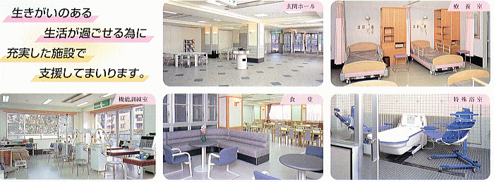

<東京都指定二次救急医療機関> 病院機能評価証取得


トップページ ＞ 介護老人保健施設 フロリール調布
理念
皆様が第二の我が家のように安心してすごせる施設を目指します。
- 私たちは、利用者さまの意思、人格を尊重します。
- 私たちは、利用者さまの個性を大切にし、家族的な温かいサービスを提供します。
- 私たちは、病院併設の利点を活かし、安全で安心できる看護・介護を提供します。
- 私たちは、知識と技術の研鑽に努め、専門職としての誇りと喜びを持ってチームケアに取り組みます。
- 私たちは、地域や家族との結びつきを重視し、医療・介護・福祉の複合施設として社会に貢献します。
フロリール調布は整形外科・脳神経外科等の診療科をもつ調布病院と一緒に併設されております。
医学的管理のもとで、理学・作業・言語聴覚士等の専門ｽﾀｯﾌによるﾘﾊﾋﾞﾘﾃｰｼｮﾝや、
生活上の看護・介護を行うことで在宅での生きがいのある生活を支援致します。
医療（調布病院）とケアー（介護老人保健施設）がドッキングした新しい地域医療支援施設です。
１．施設入所サービス
|
支援相談員と面談後必要書類をお渡しします。（面談は予約制になっています）申込書と、 かかりつけ医に記入していただく診療情報提供書を提出して下さい。 ご本人の健康状態を考慮の上ご利用の受け入れを判断させていただきます |
・相談室、家族介護教室、機能訓練室（理学・作業・言語）、レクリエーションルーム、食堂（談話コーナー）、 一般浴室、特殊浴室、理・美容室 |
|
・４人室 １４室 ・２人室 １１室 ・個 室 ２室 |
医師、看護師、介護職員、ＰＴ、ＯＴ、ＳＴ、管理栄養士、薬剤師、介護支援専門員、支援相談員 |
医学的管理のもと、専門的なケアを行います。生活リハビリ、機能訓練、レクレーションなどを行い機能回復を目指します |
朝、目を覚まし、夜、就寝するまでの動作などの自立促進をめざします。 |
ご家族等の御希望により、要介護認定に応じた日数分のご利用ができます。ご希望により送迎も致しております。 |
入浴時の着替え、入浴、洗髪などリハビリを兼ねながらリフレッシュ致します。 |
通所してリハビリ、食事、入浴等のサービスをご利用できます。御希望により送迎も致しております。 |
介護を必要の場合は、スタッフ及びボランテイアの方々がお手伝い致します。 |
リハビリの一環として、運動や趣味などの活動を楽しく送れるように、いろいろな催し物を計画致します。 |
